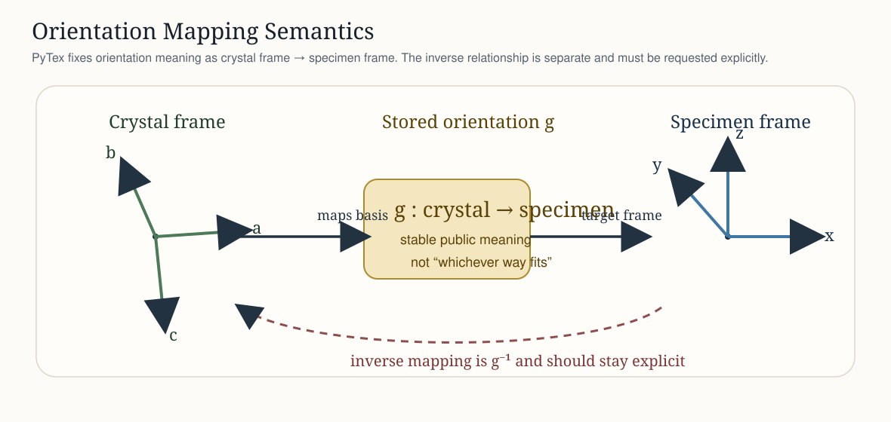
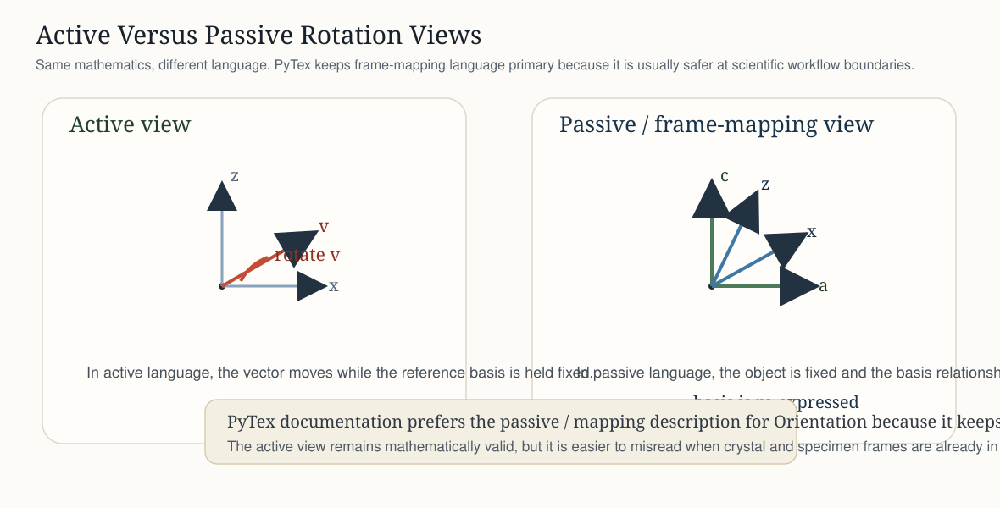
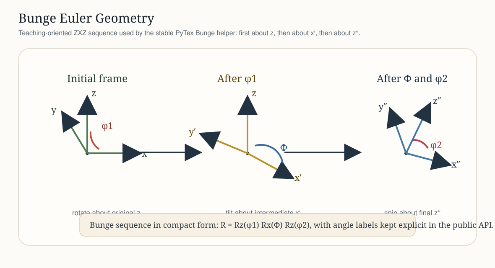

Reference Frames And Orientation Conventions¶
This page is the compact reference for how PyTex defines reference-frame semantics and orientation conventions in the stable public API.
The Core Rule¶
PyTex does not allow reference-frame meaning to remain implicit. An orientation is not just a rotation matrix or three Euler angles. In the stable model it is an explicitly typed relationship between:
a crystal-attached frame
a specimen-attached frame
a convention-aware rotation representation
an optional crystal symmetry model
That rule is what makes later EBSD, texture, and diffraction workflows interpretable across modules and tool boundaries.
Canonical Frame Vocabulary¶
PyTex uses a shared repository-wide vocabulary for the most important frame domains.

Crystal Frame¶
attached to the phase or lattice
typically labeled by crystal axes such as
a, b, cthe natural home for directions, planes, and symmetry operators
Specimen Frame¶
attached to the sample or macroscopic specimen
typically labeled by specimen axes such as
x, y, zthe target frame for texture and EBSD orientation interpretation
Map Frame¶
attached to scan coordinates
used for EBSD grid layout and neighbor topology
not interchangeable with the specimen frame unless a workflow makes that relationship explicit
Detector Frame¶
attached to image or diffraction geometry
used for pattern formation and projection geometry
intentionally separate from both crystal and specimen semantics
How Orientation Is Defined¶
In PyTex, an Orientation represents the rotation that maps the crystal frame into the specimen frame. That is the stable scientific meaning exposed by the public type.
This means:
orientation objects are not anonymous rotations
the source and target frames matter
symmetry reduction is applied relative to the crystal symmetry attached to that orientation
Note
PyTex prefers explicit orientation objects over passing raw arrays through the codebase. The point is not ceremony; the point is to avoid silent convention drift.

Direction Of The Mapping¶
The most common orientation mistake in scientific code is not a numerical bug. It is reversing the meaning of the mapping.
PyTex fixes that directly:
Orientationmeans crystal frame to specimen framethe inverse rotation is not assumed implicitly
if a workflow needs specimen to crystal behavior, it should request that behavior explicitly rather than silently reinterpret the stored orientation
Active Vs Passive Language¶
PyTex documents orientations in a frame-mapping form because that is usually the clearest language at workflow boundaries. A mathematically equivalent active-rotation view also exists, but the docs keep the mapping meaning primary so users are less likely to confuse “rotating a vector” with “changing the frame used to describe it.”

Euler Angles In PyTex¶
PyTex supports named Euler convention entry points and keeps the public contract explicit.

Bunge Euler Angles¶
The stable convenience path in PyTex is the Bunge convention:
public helper:
Rotation.from_bunge_euler(phi1, Phi, phi2)public export:
Rotation.to_bunge_euler()general convention-aware entry points also exist through
Rotation.from_euler(..., convention="bunge")
The intent is that Bunge-facing texture workflows remain readable while the general API still makes convention choice explicit when multiple ecosystems are involved.

How To Read The Bunge Sequence¶
PyTex follows the standard Bunge angle labels phi1, Phi, and phi2. The figure above is a teaching-oriented geometry sketch of the sequence:
phi1: first rotation about the original specimen or laboratoryzaxisPhi: second rotation about the intermediate line of nodes, usually written as the rotatedx'axis in the ZXZ sequencephi2: third rotation about the final crystal-alignedz''axis
For users, the main rule is simple: the angle names are not merely positional placeholders. They belong to a specific ordered construction. That is why PyTex keeps the Bunge helper explicit instead of treating all three-angle inputs as interchangeable.
Matthies And ABG Labels¶
PyTex also supports:
convention="matthies"convention="abg"
These are exposed explicitly because cross-tool pipelines often distinguish those labels even when the underlying angle family is closely related.
Quaternion Storage¶
Internally, PyTex uses canonical quaternion storage in (w, x, y, z) order with unit normalization. Convention-aware Euler import or export exists at the boundary; canonical quaternion representation is the stable internal rotational surface.
Symmetry Reduction And Fundamental Regions¶
Euler-angle import is only the first step. Once an orientation exists, PyTex keeps two different reduction problems separate:
reducing a crystal direction into an inverse-pole-figure sector
reducing an orientation or misorientation into a symmetry-reduced representative

That distinction matters because IPF-sector reduction and orientation-space reduction are related but not identical mathematical operations.
Minimal Example¶
from pytex import (
FrameDomain,
Handedness,
Orientation,
ReferenceFrame,
Rotation,
SymmetrySpec,
)
crystal = ReferenceFrame(
"crystal",
FrameDomain.CRYSTAL,
("a", "b", "c"),
Handedness.RIGHT,
)
specimen = ReferenceFrame(
"specimen",
FrameDomain.SPECIMEN,
("x", "y", "z"),
Handedness.RIGHT,
)
symmetry = SymmetrySpec.from_point_group("m-3m", reference_frame=crystal)
orientation = Orientation(
rotation=Rotation.from_bunge_euler(45.0, 35.0, 15.0),
crystal_frame=crystal,
specimen_frame=specimen,
symmetry=symmetry,
)
What This Fixes In Practice¶
You can tell which way the orientation maps without guessing.
You can test Euler-angle conversions without losing frame meaning.
You can perform symmetry-aware misorientation and disorientation calculations on a scientifically explicit object.
You can connect texture and EBSD workflows without redefining the frame model in each subsystem.
{kind=link}
{kind=link}
{kind=link}
{kind=link}
{kind=link}
{kind=link}
References¶
Normative¶
docs/standards/notation_and_conventions.mddocs/architecture/canonical_data_model.mddocs/architecture/orientation_and_texture_foundation.md
Informative¶
MTEX documentation: Definition As Coordinate Transformation
MTEX documentation: Rotation Definition
Bunge, Texture Analysis in Materials Science (1982)